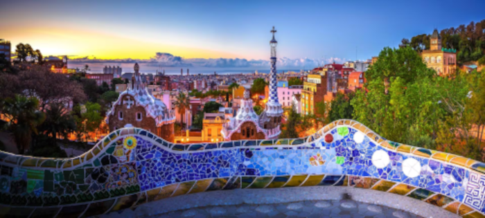
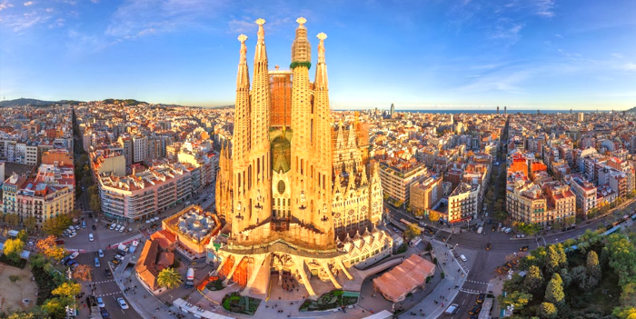

Cidade Cosmopolita, com cultura forte, desenvolvimento e muito turismo.
Vejam o roteiro que preparamos a seguir. Mas antes - a maior de todas as nossas dicas - use o Barcelona City Pass. Ele inclui entrada para a Sagrada Família, entrada para o Park Guell (sem filas!), ônibus hop on hop off pela cidade e guias!
Barcelona é a casa de muitas obras do arquiteto catalão Gaudí. E são todas imperdíveis! Te convido a conhecer o Park Güell, a La Pedrera (Casa Mila) e a Casa Batlló. Ambas as casas ficam na luxuosa avenida Passeig de Gràcia, que também pede um passeio!
O metrô foi uma mão na roda enquanto eu me locomovia por Barcelona, e por isso, não posso deixar de recomendar que você garanta o seu cartão Hola. Com ele, você tem acesso ilimitado ao transporte público dentro de um sistema de horas.
Sagrada Família é a principal obra de Gaudí, e chama a atenção pela altura de suas torres. Inacabada até os dias de hoje, essa basílica é bem concorrida pelos viajantes, e adquirir o seu ingresso antecipadamente irá salvar sua visita. Aqui vai mais uma dica: O lado de dentro é mais impressionante que fora. Meu conhesolho fica para ir no início da tarde e pegar o pôr do sol iluminando os vitrais, é um espetáculo
Ao se hospedar, priorize a proximidade com o metrô para otimizar sua viagem. O Hotel Catalunya atende bem a esse requisito, e possui um ótimo custo-benefício! Ele fica no Bairro Gótico, um dos mais bonitos da cidade.
Indo ao Mercado La Boquería, que fica na rua La Ramblas, você encontra uma grande variedade de frutas e comida fresquinha - garanta um suco por lá. Para incrementar o dia, faça um piquenique no Parc de la Ciutadella, não muito longe do mercado.
No bairro de Montjuïc, o castelo do Parc de Montjuïc vai te dar uma vista incrível de Barcelona, e a Font Màgica de Montjuïc e suas luzes irão te hipnotizar à noite.
Foi fruto de atividade proposta pela PROZ, a maioria das informações foram retiradas deste blog: Em Algum Lugar do Mundo